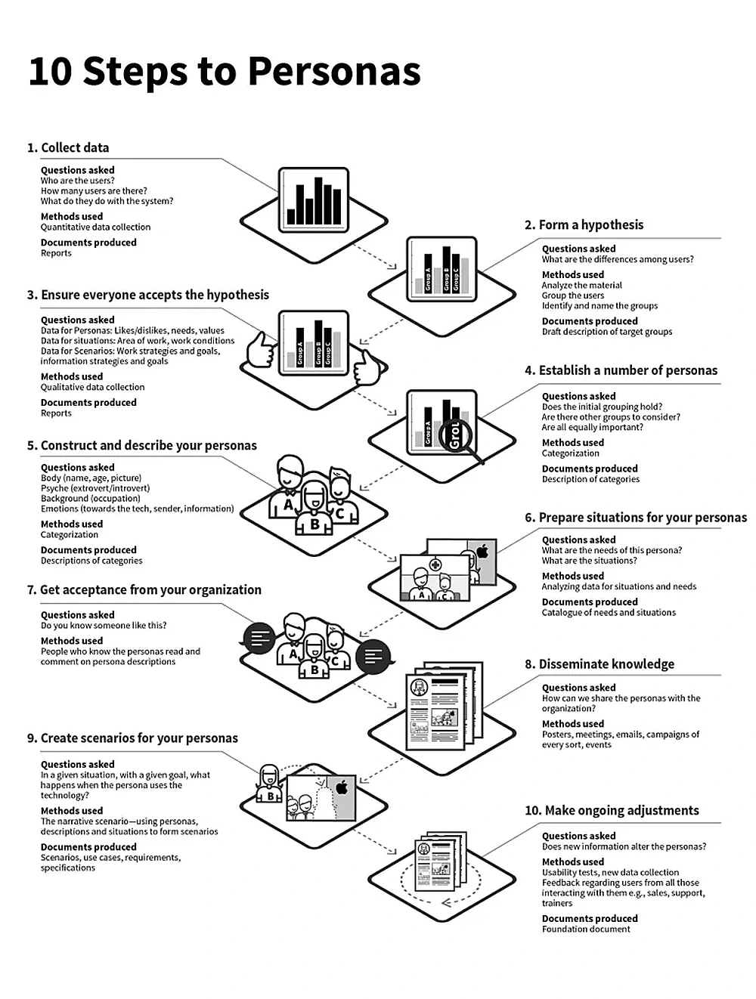

How personas can help teams make user-centered decisions when they are grounded in real evidence.

View full imageWhat personas are
Personas are not real people. They are composite representations of real users derived from research.
They help designers and stakeholders understand motivations, challenges, goals and behaviors in a way that feels concrete and memorable.
Types of personas
Goal-directed personas focus on what users want to accomplish with the product.
Role-based personas consider the roles users play in their organizations or lives.
Engaging personas use storytelling elements to make users easier to understand and remember.
Fictional personas can be useful as a starting point, but they should not replace research-based personas.
Creating engaging personas
A strong persona process begins with collecting data from interviews, surveys, observations and other research methods.
Teams then form hypotheses about user differences, validate them with stakeholders and decide how many personas are needed.
The descriptions should include goals, behaviors, motivations, context and scenarios that show how users interact with the product.
Personas should be shared with the team and updated over time as new insights appear.
Benefits of personas
Personas strengthen empathy by helping teams connect with user needs more deeply.
They support user-centered decisions, facilitate communication, help prioritize features and provide a framework for evaluating design ideas.
When used well, personas become a practical decision-making tool rather than a decorative artifact.
Using personas responsibly
Personas should always be grounded in evidence. If they become stereotypes or assumptions, they can mislead the team.
The value of personas comes from helping teams remember who they are designing for and why specific needs matter.
takeaway